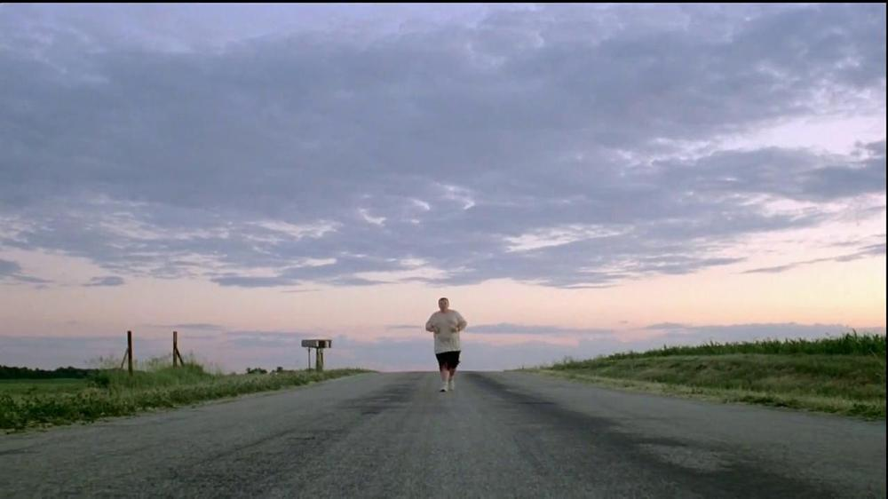
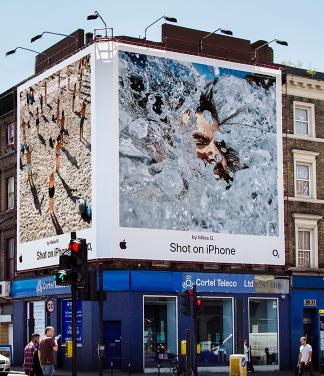
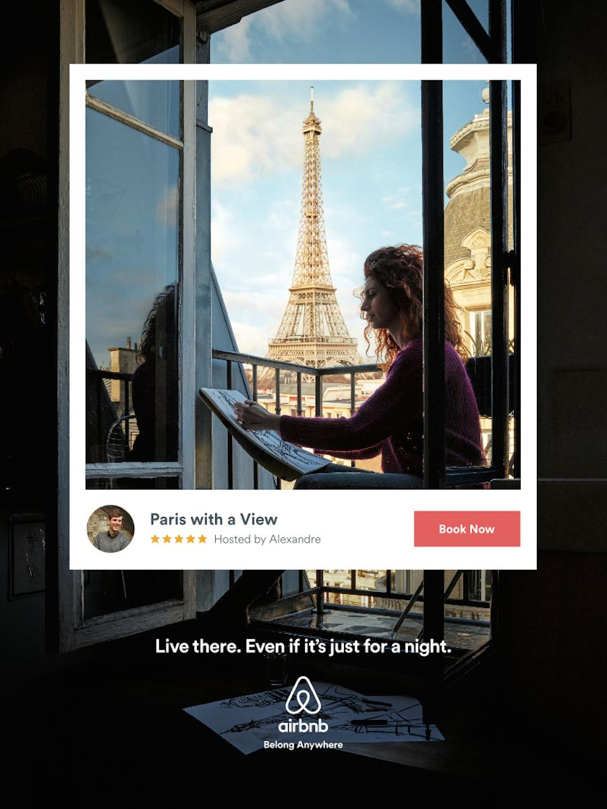
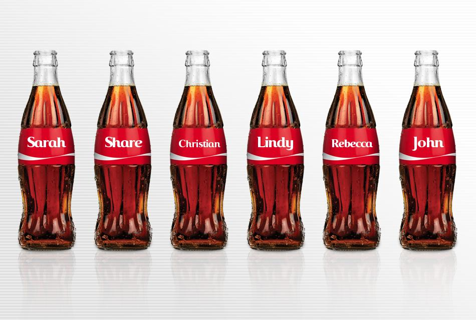
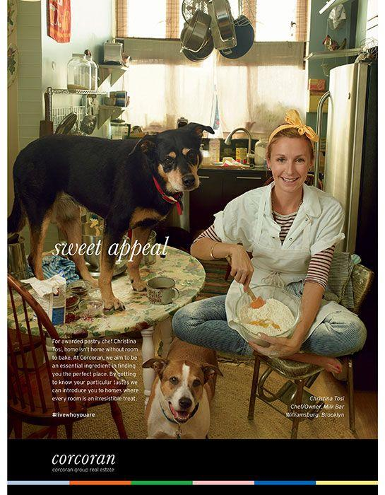
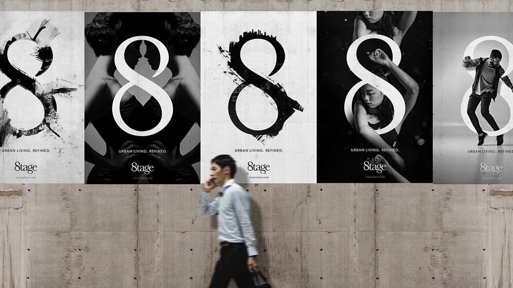
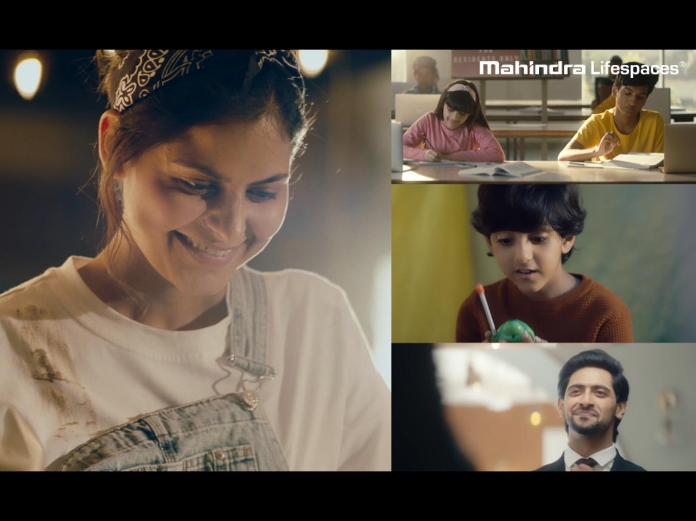
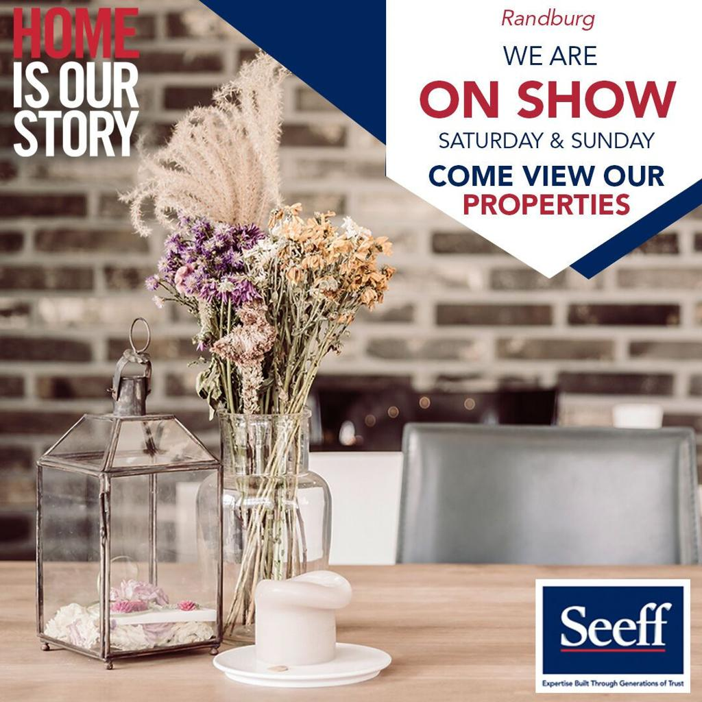
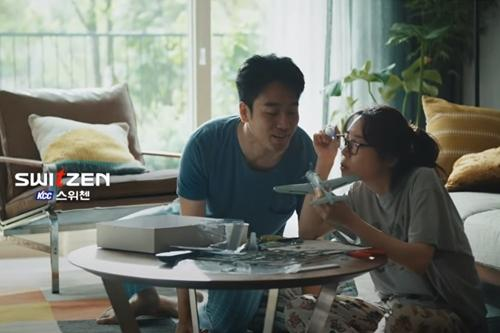

광고를 만든 회사는 자기 브랜드의 장점을 열심히 이야기했는데, 정작 광고가 끝나고 나면 무슨 이야기를 했는지 기억이 잘 나지 않을 때가 있다. 반대로 제품이나 브랜드 설명은 거의 없었는데, 이상하게 한 사람의 표정·한 장면·하나의 감정이 오래 남는 광고도 있다.
이 차이는 어디서 올까 — 이번 글에서는 "이 광고에서 진짜 주인공은 누구인가"라는 질문 하나로, 먼저 나이키·도브·애플 등 유명 브랜드 광고 5편을 보고, 그다음 이 원칙을 부동산 광고 7편에 적용해봤다. 마지막은 국내 사례인 KCC건설 스위첸의 '문명의 충돌'로 마무리한다.
이 글은 브동산이 광고를 공부하며 남기는 브랜드 언박싱 시리즈의 첫 번째 글이다. 좋은 사례를 발견할 때마다 새 글로 이어갈 예정이다.
먼저 대형 브랜드 사례로 원칙을 확인한다. 다섯 편 모두 제품 스펙이나 회사 자랑 대신, 보는 사람의 감정과 삶의 한 장면을 앞에 세운다.
무슨 광고인가. 2012년 런던 올림픽 시기에 나온 캠페인. 대표 편인 'Jogger'에서는 세계적인 선수 대신 평범한 소년이 어두운 새벽길을 천천히 달려온다. 운동화의 기능 설명은 없다.
왜 인상적인가. Nike가 하는 말은 "Nike가 얼마나 대단한가"가 아니라 "당신도 당신만의 위대함을 가질 수 있다"이다. Nike의 광고인데 Nike가 주인공이 아니라, 달리는 사람이 주인공이고 Nike는 그 가능성을 믿게 해주는 조력자에 가깝다. Brand → Hero가 아니라 Customer → Hero, Brand → Guide 구조다.
무슨 광고인가. 여성에게 자기 얼굴을 직접 설명하게 하고, 법의학 몽타주 전문가가 그 설명만으로 얼굴을 그린다. 이어서 같은 사람을 본 다른 사람의 설명으로 다시 그린 그림과 비교하면 상당한 차이가 난다.
왜 인상적인가. Dove는 비누나 화장품의 성능을 이야기하지 않는다. "나는 나 자신을 너무 부정적으로 보고 있었던 건 아닐까"라는 자각의 순간 자체가 광고의 클라이맥스다. 소비자에게 설명하는 광고가 아니라, 소비자가 스스로 깨닫게 하는 광고다.
무슨 광고인가. iPhone 카메라의 화질을 설명하는 대신, 사람들이 iPhone으로 찍은 사진을 광고판에 그대로 건다. 사진을 찍은 사람도, 창작한 사람도 Apple이 아니라 사용자다. Apple은 실제로 사용자 사진에 사용료를 지급하는 방식까지 공식적으로 운영해왔다.
왜 인상적인가. "우리 카메라는 좋습니다"가 아니라 "이 사람들이 이것을 만들었습니다"로 광고의 구조가 바뀐다. 제품이 사라진 게 아니라, 제품으로 무언가를 만들어낸 사람이 주인공 자리를 가져간다.

무슨 광고인가. 좋은 숙소·편리한 예약·다양한 지역·합리적인 가격을 말할 법한데, Airbnb는 "Belong Anywhere"를 내세운다. 어디를 여행하느냐보다 그곳에서 내가 어떤 느낌을 받느냐에 초점을 맞춘다. Airbnb는 공식적으로도 자신의 미션을 "help people belong anywhere"라고 설명한다.
왜 인상적인가. 집은 상품이지만 광고의 주인공은 소속감과 사람 사이의 연결이다. Product → Experience로 넘어가는 순간 광고가 다루는 이야기의 크기가 달라진다.

무슨 광고인가. 2011년 호주에서 시작된 캠페인. 콜라병의 Coca-Cola 로고 대신 사람들의 이름을 넣어, 친구나 사랑하는 사람과 콜라를 나누고 추억을 만드는 행동을 캠페인의 중심에 놓았다.
왜 인상적인가. 광고의 주인공은 Coca-Cola가 아니라 "누구에게 이 콜라를 건넬 것인가"다. 제품은 "우리 콜라는 맛있습니다"를 말하는 대신, 사람과 사람을 이어주는 매개체가 된다.

다섯 사례를 나란히 놓고 보면 패턴이 보인다. Nike(운동화)는 나의 가능성을, Dove(뷰티 제품)는 나 자신에 대한 인식을, Apple(iPhone)은 사용자의 창작물을, Airbnb(숙박)는 소속감을, Coca-Cola(음료)는 사람과 사람의 관계를 진짜 주인공으로 세운다. "Look at us"(우리가 얼마나 좋은지 보세요)가 아니라 "Look at you"(당신은 어떤 사람인가)를 이야기하는 것이다.
부동산은 특히 상품 중심으로 흘러가기 쉬운 카테고리다. 역세권·대단지·조경·커뮤니티·마감재·평면·프리미엄 라이프 — 전부 중요한 이야기지만, 좋은 주거 광고는 한 단계 더 나아가 "그래서 여기에서 사람들은 어떻게 살게 되는가"를 묻는다.
무슨 광고인가. 미국 부동산 회사 Corcoran이 2005년 시작한 캠페인으로, Tina Barney·Annie Leibovitz 등 유명 사진가와 작업했다. 집의 면적이나 자재를 보여주는 대신, 그 집에서 살아가는 사람이 어떤 사람인지를 보여준다. "House → Identity"로 바꾼 것이다.
왜 인상적인가. 한 줄로 정리하면 "What does your home say about you?" — 부동산 광고가 상품 광고에서 자기표현의 광고로 넘어간 사례다.

무슨 광고인가. LA 다운타운의 주거 프로젝트로, 브랜드 매니페스토는 "Life is a drama, and we are all actors in it"에서 출발한다. House는 물리적 공간, Home은 감정이며, 집은 우리의 삶·가치·욕망을 펼치는 무대라는 것이다. 최종 메시지는 "The Stage is yours."
왜 인상적인가. Brand = Stage, Customer = Actor. 브랜드가 주인공 자리를 아예 포기한 사례다.

무슨 광고인가. 보스턴 Seaport의 고급 주거 프로젝트. 캠페인의 질문은 "Where do you live?"가 아니라 "How do you live?"다. 전형적인 부동산 feature 언어 대신 패션 에디토리얼 같은 이미지와 사람 중심의 라이프스타일 이미지를 사용했다.
왜 인상적인가. 주소를 파는 것이 아니라 "어떤 방식으로 살아가는 사람인가"를 판다. feature-driven real estate language를 lifestyle-driven storytelling으로 바꾼 사례다.
무슨 광고인가. 인도 부동산 브랜드 Mahindra Lifespaces의 캠페인. 이름부터 "Crafting Life" — 집을 짓는다는 이야기가 아니라 삶을 만들어간다는 이야기다. "우리가 좋은 건물을 지었습니다"가 아니라 "사람들이 좋은 삶을 만들어갈 수 있는 기반을 만듭니다"로 개발사의 역할이 바뀐다.
왜 인상적인가. Building → Life 구조. 건축물이 목적이 아니라, 건축물이 만들어주는 삶의 결과가 목적이다.

무슨 광고인가. 여러 개의 에피소드로 가족의 일상을 보여주는 콘텐츠 시리즈. 아이들이 놀고, 가족이 대화하고, 함께 시간을 보내는 모습이 이어지는데 집의 장점은 굳이 설명하지 않는다.
왜 인상적인가. "이 집에는 이런 공간이 있습니다"가 아니라 "이 집에서는 이런 일이 일어납니다"가 된다. 공간이 먼저 나오는 것이 아니라, 그 공간에서 벌어지는 이야기가 먼저 나온다.
자료: 캠페인 제작사 설명 ↗ — 이 사례는 대표 이미지를 확인할 수 있는 공개 자료를 찾지 못해 이미지 없이 소개합니다.
무슨 광고인가. 남아프리카 부동산 회사 Seeff의 브랜드 리포지셔닝. 기존 부동산 광고가 "부동산 회사 → 고객"을 바라봤다면, 카메라를 뒤집어 "고객 → 고객의 이야기"를 바라보자는 것이다. 표현 그대로 "Turn the lens around."
왜 인상적인가. 부동산 광고의 변화는 더 멋진 집을 보여주는 것이 아니라, 카메라의 방향을 바꾸는 것일 수도 있다는 것을 보여준다.

무슨 광고인가. 2020년 공개된 '문명의 충돌'은 결혼 4년 차 젊은 부부의 이야기로 시작한다. 말투도, 식습관도, 생활패턴도, 집 안의 온도까지 다른 두 사람. KCC건설은 이를 "서로 다른 두 문명이 만나 생기게 되는 충돌"이라고 표현한다.
왜 인상적인가. 아파트 광고인데 아파트가 거의 주인공이 아니다. 입지도, 평면도, 커뮤니티 시설도, 고급 마감재도 이야기하지 않는다. 대신 두 사람이 같이 살아가는 아주 사소한 일상을 보여주고, "가족이 된다는 것은 서로의 다른 문명에 부딪혀보고 이해하는 과정들의 반복"이라는 메시지를 남긴다. 이후 '문명의 충돌2 – 신문명의 출현'으로 이야기가 이어졌고, 대한민국광고대상 등 여러 광고제에서 수상했다.

일반 브랜드에서 출발해 부동산 광고까지 따라가 보니, "브랜드가 주인공이 되지 않는다"는 말은 로고나 제품을 적게 보여주라는 뜻이 아니었다. Nike는 운동화를 말하기보다 가능성을, Dove는 화장품을 말하기보다 자기 인식을, Apple은 카메라를 말하기보다 사용자의 창작물을, Airbnb는 숙박을 말하기보다 소속감을 이야기했다. 부동산에서는 이 원칙이 더 명확해진다 — 집은 결국 사람이 살아가는 무대이기 때문이다.
Corcoran은 '내가 누구인지'를, Stage는 '내 삶의 무대'를, Echelon은 '어떻게 사는가'를, Mahindra는 '만들어가는 삶'을, Alcinos는 '가족의 이야기'를, Seeff는 '나의 집 이야기'를 보여준다. 그리고 스위첸의 '문명의 충돌'은 가장 일상적인 부부의 관계를 통해 '집'이라는 개념 자체를 다시 생각하게 만든다.
정리하면, 브랜드가 말하는 광고("Look at us")와 제품이 말하는 광고("Look at this")를 넘어, 가장 좋은 광고는 사람을 주인공으로 세운다("Look at you"). Brand = Hero가 아니라 Customer = Hero, Brand = Guide·Stage·Enabler가 되는 것이다. 광고가 끝난 뒤 "저 브랜드 참 대단하다"가 아니라 "저런 삶을 나도 살고 싶다"가 남는다면, 그 광고는 이미 성공한 셈이다.
브동산이 앞으로 청약·분양 콘텐츠를 만들 때도 이 다섯 질문을 기획 기준으로 삼으려 한다 — 단지 자랑이 아니라, 그 집에서 만들어질 삶을 먼저 보여주는 방향으로. 이 시리즈는 계속 쌓입니다 — 다음 브랜드 언박싱에서 또 다른 사례로 이어집니다.
0324jhkim@gmail.com